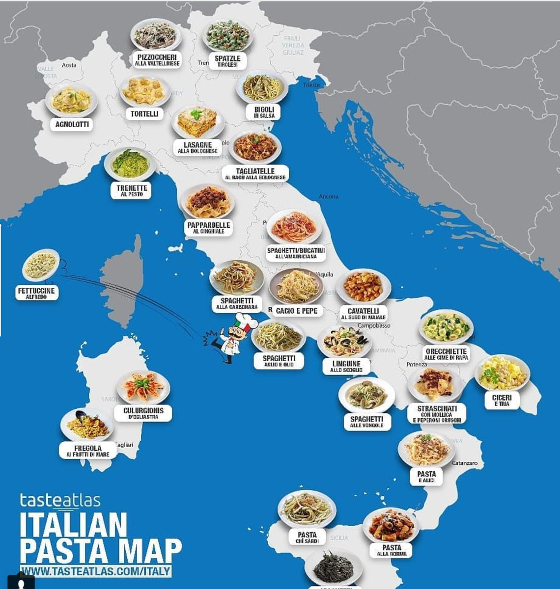
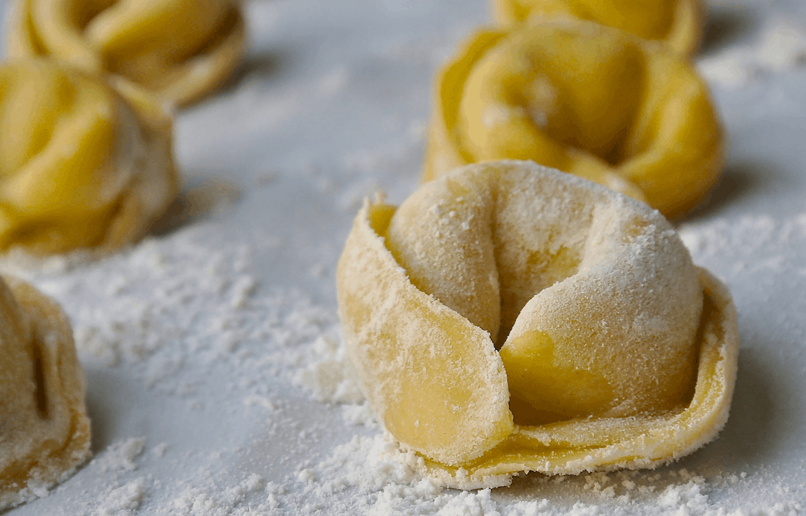
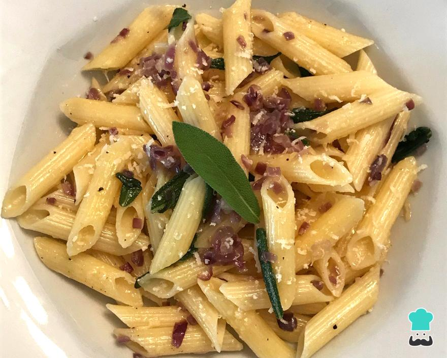
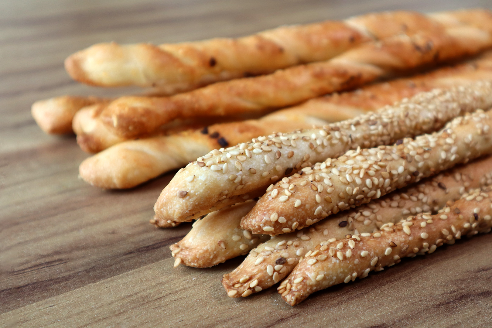
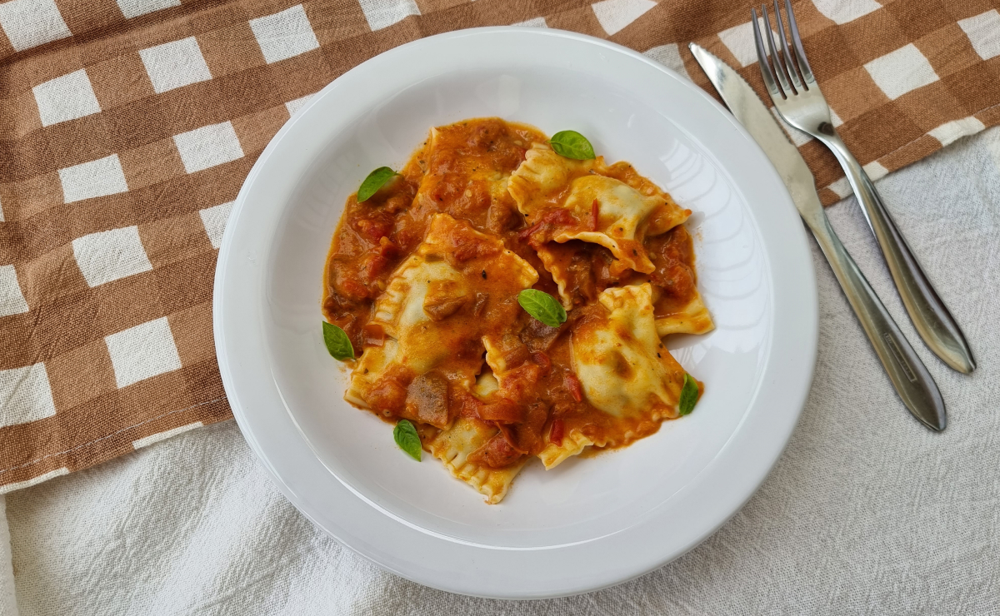
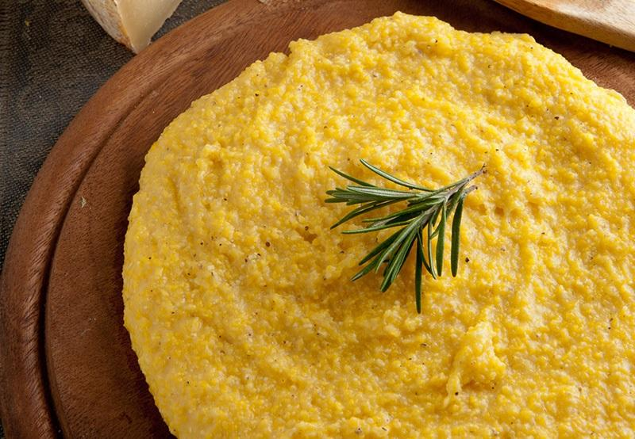
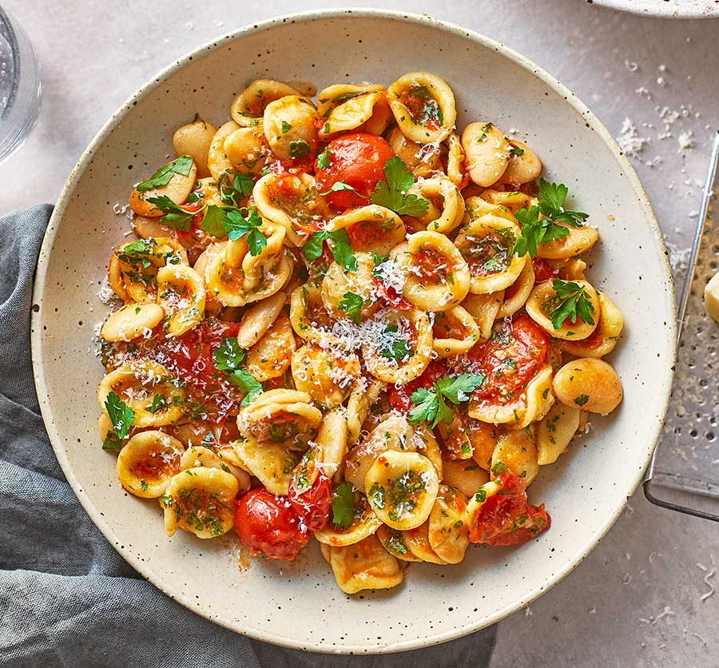

A culinária italiana apresenta influências da cozinha etrusca, da antiga Grécia, da antiga Roma, Bizantina, Hebraica e Árabe.
E sofreu importantes mudanças com a descoberta do Novo Mundo (América), como a introdução de alimentos como batata, tomate, pimentão e milho. Todos esses alimentos hoje fundamentais na culinária italiana foram introduzidos em larga escala apenas no século XVIII.
A culinária italiana é uma das mais famosas do mundo e é conhecida pela sua diversidade em nível regional como exemplos de produto típico temos o queijo Parmigiano Reggiano da região da Emília Romana e o Gongonzola da Região do Piemonte.
Região: Campania
O spaghetti pode ser servido com uma variedade de molhos, o mais comum é com molho de tomate com queijo ralado e folhas de manjericão.

Região: Emília Romana
Massa feita com farinha de trigo e ovos, e recheada com carne de gado, de porco e queijo.
Regiões: Campania e Sicilia
Massa em formato cilíndrico liso ou com listras. Em geral são preparados ao molho vermelho ou pesto.
Região: Piemonte
Biscoito criado em 1679, feito com farinha de trigo, azeite de oliva e água.
Região: Basilicata, Emília Romana, Lazio, Marche, Piemonte, Toscana e Lombardia.
Massa feita com farinha de trigo e ovos com diversos tipos de recheio.
Região: Norte da Itália
A polenta que é feita à base de farinha de milho e água é historicamente conhecida na Itália como prato dos pobres.
Região: Vêneto
Doce muito famoso, feito com bolacha champagne, mascarpone, café e ovo.

Regiões: Puglia e Basilicata
Macarrão feito com farinha de grano duro com formato de orelhinhas.
